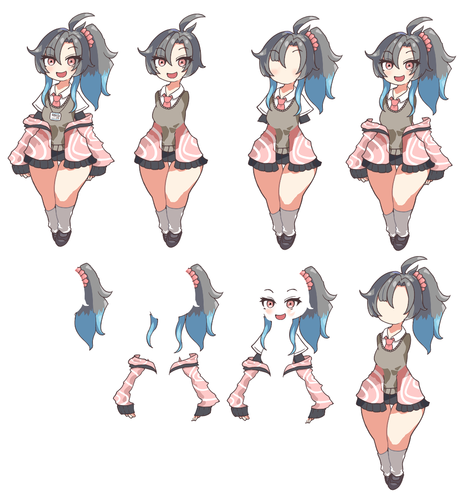
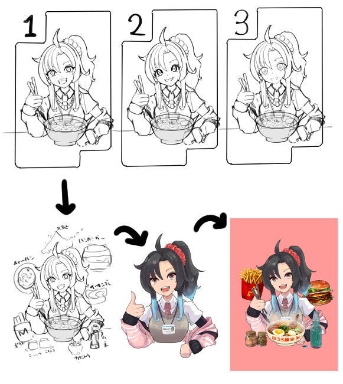
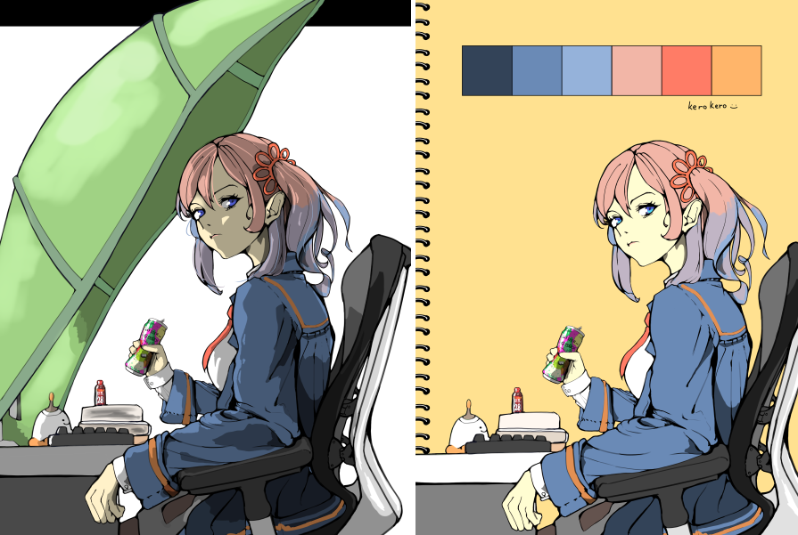

1.料金
下記に参考目安は用意しておりますが、柔軟に対応いたしますのでご相談ください。
例1.「とりあえず指定したキャラクターとポーズのラフだけまず描いてもらって、提案資料に使ってみて、OKをもらえたら複数種類の本発注をしたい」というケースなど 1枚￥2,000 ~
例2.「ラフだけ提案してもらって、よさそうなのを著作権譲渡してもらいたい(発注者側でラフをもとに制作して自由に使いたい)」など 発注時のラフは 1枚￥2,000 で、ラフ確認いただいて権利確定後に買取金額要相談など
例3.「友達のお誕生日イラストが欲しくて、こっちでイメージラフは描いたんだけど、これを基にSNSで映えるような作品にしてほしい！」など 規模によって下記目安を参考にしつつ、価格要相談など
参考目安
(素材画像の権利を単体使用いただく想定)
描きこみ小
- 人物イラストバストアップ、背景単色、差分なし ￥9,000 ~
- 人物イラストバストアップ、背景(描きこみ小)、表情差分なし ￥12,000 ~
- 人物イラストバストアップ、背景(描きこみ小)、表情差分あり(表情普通・目閉じ笑み など2~3枚程度) ￥15,000 ~
- 人物全身、背景単色、差分無し (サムネ用立ち絵用途など) ￥14,000 ~
- 人物全身、背景単色、ポーズ・表情差分あり (動画・ゲーム用立ち絵用途など) (※差分枚数と種類によって変動) ￥17,000 ~
- 人物全身、背景(描きこみ小)、差分無し一枚絵 ￥17,000 ~
- 人物全身、背景(描きこみ小)、ポーズ・表情差分あり ￥22,000 ~
描きこみ、ディテール、パーツ、画風などオプション多め
- 細かく用途によって柔軟に対応します ￥30,000 ~
live2d用イラスト
- イラスト作成からpsdパーツ分けまで ￥60,000 ~
- イラスト制作～モーション作成まで一括で依頼 ￥170,000 ~
静画でのアニメーション用素材・追加差分
- カット数やクオリティに依存するので要相談
- 例1. 目がぱちぱちするアニメーション用の素材(前・中割・後の3カット) +￥5000
- 例2. MVのサビでキャラクターが動く(3秒程度キャラクターがヌルヌル動くワンカットで32枚程度)のアニメ塗の1カットで ￥260,000 ~
※その他各種psd納品とレイヤー分け納品については後述のファイル形式の項目に記載してありますが、用途などによって都度のご相談でお願いします
レイヤー分けのイメージ
下記の様に部位ごとにレイヤーを用意し、全体をpsdから結合できるようにするなどが一例としてあります。

2.期限
- 基本的には 6週間程度 の期限を頂いています
- ※お急ぎの場合、状況に応じて短納期で作成できる場合もあります(要相談)
3.作品の2次販売に関しての注意
- 例としてはゲーム・MV公開用に発注いただいたイラストを「グッズ販売」などの用途で使用いただく場合などが当てはまります
- グッズ販売用途などでも使用できるイラストに関しては、著作権法に則った「創作者の許可」が発注者様に付与される形を取る必要があります
- このあたりの相談に関しましては、細かい条件や状況、法律的な契約が必要かどうかなどの判断もケースバイケースですので要相談でお願いします
- ※一般的に著作権の譲渡・買取に関しては、元の発注料金の数倍から数十倍、数百倍まで値段が上がる可能性があるとされています
- イラストそのものというよりも権利の契約になるため、個人での発注というよりは企業とのやりとりなどで行われるイメージがあります
参考目安
特定のプラットフォームからのグッズ販売に使用したい
￥100,000 ~ など
契約記載例
１．本制作物の著作権（著作権法第27条及び第28条に定める権利を含む）は、制作代金が支払われたときに、制作会社から発注者に移転する。
２．制作会社は本制作物について、発注者及び発注者が指定する第三者に対して著作者人格権を行使しない。
など
※SNSアイコンとして切り抜いて使用、動画サムネに使用、紹介媒体物(無料パンフレットなど)への印刷など「作品そのものを強調した2次的な販売」などを行わないケースは基本的に行っていただいて問題ありません
- このあたりの判断は曖昧なものになるので、グレーかもと判断された際にはお手数ですがご確認のご連絡をいただけると幸いです。
4.イラストサイズ・ファイル形式
- 制作作業前にお知らせいただければ可能な限り対応いたします
- 例: A4縦サイズ(2894 * 4093 px) 350dpi など (600dpiなども対応いたします)
- ファイル形式に関しても柔軟に対応いたします
- psdでの納品も可能です
- レイヤー分けの指定に関しても別途追加でお受けいたします
- 背景、線画、塗、影等エフェクトなどで簡易的に分ける場合は別途相談お願いします
- live2d用、spine用のパーツ分けのためのレイヤー名指定などは別途相談でお願いします
- 例: 仕様「差分のある部位は、末尾に_waitなどで区別してください」、「待機モーションに使う右手（手先）の画像→ hand_R_wait」 など
5.イラストの構図・イメージ・描きこみ量・差分の有無など
- イラストの構図やキャラクターのイメージ、シチュエーションや用途、塗り方や線画のイメージ、装飾品や服装、アイテムの描きこみ量、差分の用意などご相談ください
- ※すべてこちらにお任せいただくことも可能ですが、その場合は発注者様が思った通りの作品が出来上がるかどうかは難しいかもしれません
- 発注者様から情報、頂いた参考資料(ここでの資料は私的利用としてネット等に転がっているものでもなんでもOK)や手描きのイメージラフなどをもとに、数段階の作業を経て都度クオリティと方針を確認させていただきます。
- 例1. 発注者様から頂いたラフ絵のポーズ(チラシの裏にボールペンで描いた)と頂いたURLのyoutubeの特定MV動画の雰囲気、自キャラの設定資料とイラストの使用用途などをもとに、制作側で大ラフをいくつか用意 → 発注者様で確認いただいて、作業方針のもとになる大ラフ絵を決めていただき作業開始 → カラーラフ(線画と描きこみ前の下塗り)を作成し確認 → OKが出たら仕上げ作業開始
- 例2. 「やり取りとか忙しくてできないかもしれないので、だいたいの参考資料と要望を送るんで、期限までにあとよろしく！」 → 各種作業進捗だけ都度共有して、完成まで制作側にある程度任せてしまう
イラスト完成までの流れのイメージ
下記の様に大ラフ決定 → ラフ絵 → 線画・着色 → 完成 のような手順が一例としてあります。

発注時のイメージ指定によって変わる、同一線画から完成させた2種の絵の例
下記の様に「逆光」で「陰影を段階的」に描いたものや、「単色の塗」で「コントラスト強めの影」を入れるなどの描き分けが一例としてあります。

6.リテイク・発注キャンセルなどについて
- 「作品のイメージが思っていたものと違う」という場合のリテイクや取引の途中終了に関しては、個別にご対応させていただきます
- ラフ制作作業での認識のすり合わせは重要かつ、手戻りの工数がある程度発生するものなので、ラフ段階でのリテイクに関しては明確に回数を設けたりはせずに柔軟に対応させていただきます
- ラフ確定後の塗等で「なんかやっぱりイメージと違う」というリテイクに関しては1回まで無料でお受けいたします
- ※このあたりはケースバイケースだと思うので、都度ご相談してご対応させていただきます
- 作業進行中のキャンセルにつきましても、個別に事情や状況が異なる場合がありますので都度ご相談させてください
7.その他
- 「一枚絵用途のイラストをそのまま使ったグッズ販売」などのイラストの2次販売の場合を除き、基本的に商用利用OKです。
- 上記の記載内容に関してですが、制作側・発注側間で極力トラブルが起こらないように事前に規定しているだけのものになりますので、個別にご相談いただいて柔軟に対応いたします
- 制作側・発注側がお互いにwin-winな状況を作れるように最大限尽力いたします
- 例. 発注側は想像通りのイラストをゲームやMV、アイコンに使えてwin, 制作側は料金がもらえて実績としても紹介できてwin
- 上記内容に記載が無いものに関しましても、参考資料や手法などをご提案いただければお勉強させていただき対応することも可能なので、そのような場合も気軽にご確認頂ければと思います
- 適格請求書発行事業者(インボイス登録)はしておりませんので、関連する契約が必要になる場合にはご相談させてください